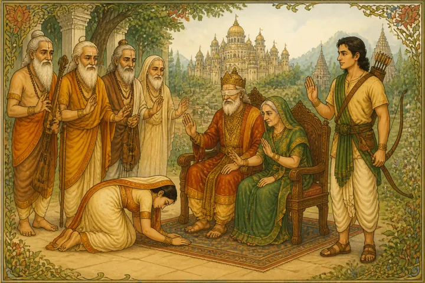
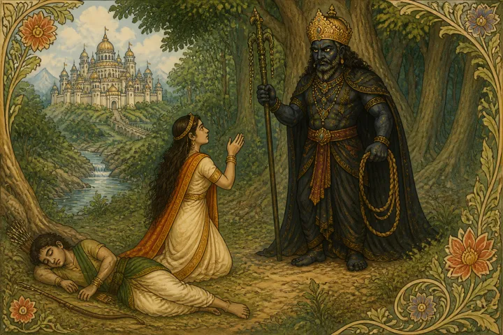
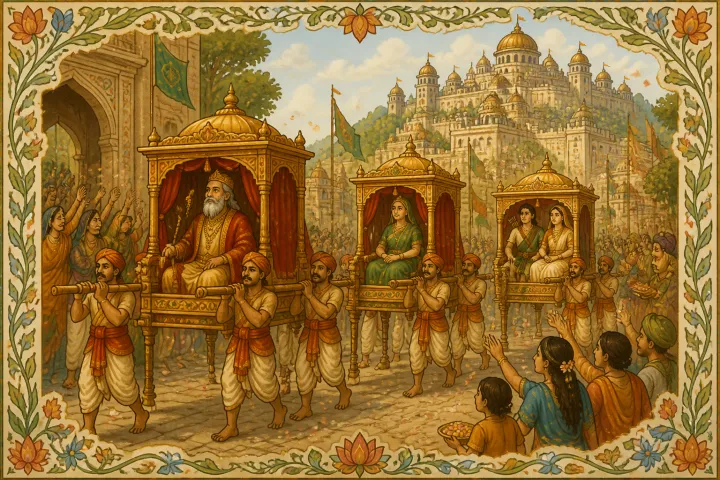

SATYAVAN AND SAVITRI
Once upon a time there ruled over the Madva people a great king called Asvapati or lord of horses. His subjects loved him, his fame was great and his riches immense. But he was not wholly happy, because he had no children. As he grew older his longing for children increased. And he fervently worshipped Brahmadeva's Queen, the goddess Savitri, and became an anchorite that he might win her favour. For eighteen years he worshipped her, until at last he won her favour and she vouchsafed him a vision. Out of a sacrificial fire which he had built up for her, she rose in all her splendour and glory. "O King Asvapati," she said, "O Lord of Horses, for eighteen years I have watched your piety and your pure life. I have vouchsafed you this vision in order that you may ask me a boon. Ask me a boon, therefore, and whatever it is, unless it is something evil, I shall willingly grant it to you".
"Great Goddess," said King Asvapati, "I long for children. 1 practised austerities and worshipped at your shrine that you might grant me them. If therefore you are pleased with me, graciously grant me this boon."
"O King," said Savitri, "I knew your desires before you told them to me. Before I left Brahmagiri I entreated the Lord Brahmadeva on your behalf. He has graciously listened to my entreaties and has promised me that soon a beautiful daughter shall be born to you. This is the Lord Brahmadeva's command. But do not thank him for he has no need of a mortal's thanks". "So be it," said the king reverently and with bowed head. When he again lifted his eyes Savitri had vanished.
A year later the king's eldest queen, Malavi, bore him a beautiful little baby girl, and because the goddess Savitri had vouchsafed her birth in answer to the king's prayers, he and Queen Malavi called the little girl Savitri also. As the years passed by Savitri grew into the most lovely maiden in all the land of the Aryas. Her father's subjects adored her as if she were a goddess. But her tall form and imperious beauty so awed the young princes of India that none came forward to ask for her hand. King Asvapati grieved that no suitor wooed his beautiful maid. At last he sent for Savitri. "My daughter," he said, "you are a grown woman and it is time for you to marry. But no suitor comes to win you. Go therefore through the land of the Aryas and seek some youth fit to be your husband." Savitri, blushing deeply, took leave of the king. In a short time the king's charioteer drove up a golden chariot to the door of her palace, and seated in it and accompanied by wise ministers and horse soldiers with glittering lances, she journeyed in turn to the various shrines and holy places of India.
She was absent for several months. In her absence the sage Narada visited the court of Asvapati, king of the Madvas. The king greeted the great sage with befitting reverence, and king and anchorite were talking together when a royal messenger announced that the Princess Savitri had returned and was driving through the outer gates of the royal palace. The sage Narada asked the king where she had been and why he did not wed her to some Aryan hero, "For that very purpose," answered the king, "I sent her away. She will now announce to me whom she has chosen for her husband." Just then the princess entered the royal hall and the king bade her tell him on what hero her love had fallen. The princess blushed and said with a smile that made her lovelier than before, "O King Asvapati, my father, there ruled some years ago in the land of the Salyas a noble king named Dyumatsena. But while still in the prime of life and while his son was but a tiny child the king's eyes failed him and he became blind. Hearing of this a neighbouring king, over whom King Dyumatsena had in earlier years triumphed, sought his revenge. He suddenly attacked the land of the Salyas, overthrew the king's army and forced King Dyumatsena to flee with his queen and the little prince to the forest. There King Dyumatsena became a hermit and renounced the world. For eighteen years he has lived with his wife and son. And now the son, Satyavan by name, has grown to splendid manhood. I have seen him and I love him, and he alone shall be my husband."
So saying the lovely princess bowed before her father and the great sage Narada, until her head touched their feet.
"Alas!" exclaimed Narada, "alas! Your daughter, O King, has made but a foolish choice." "Venerable Sage," said the king anxiously, "is not Prince Satyavan wise and brave, tender-hearted and handsome?" "He is indeed," said Narada, "Prince Satyavan is as wise as Brihaspati, as brave as the god Shiva, as tender-hearted as mother earth, and as beautiful as an eastern moon. But he has one defect which outweighs all his virtues. Exactly one year from today Prince Satyavan's life will come to a close."
"O my daughter," cried King Asvapati, "choose another husband. For if you wed Satyavan, in a few months you will be a widow."
"No, my father," said Savitri, "my love once given can never be given to another. I chose Prince Satyavan to be my husband. I love him and him only will I wed." The courage of the beautiful maid touched the sage's heart. "O King," he said, "the maid will never wed any one but Satyavan. Let her, therefore, have him for her husband." The king bowed before Narada and said, "Venerable Sir, as you will, so shall it be!" The same day Narada took his leave and King Asvapati began to prepare for his daughter's wedding. On an auspicious day he gathered round him the wisest Brahmans of the realm, and taking his daughter with him set out in his chariot for the hermitage of King Dyumatsena. When they reached the forest, he left his chariot and walked on foot until he found King Dyumatsena seated on a mat of kusa grass in the shade of a teak tree. King Asvapati bowed and told the royal hermit who he was. And Dyumatsena offered him a cow from his herd by way of welcome. King Asvapati took the gift and in return told King Asvapati the object of his coming. King Dyumatsena at first demurred. "How will your daughter," he asked, "bear the hardships of the forest? In the old days when I was king of the Salyas I would gladly have accepted your offer. But today when I am but a forest hermit, how can I?" "No," answered King Asvapati, "I have set my heart on the marriage; therefore do not thwart me." "If that be so," replied King Dyumatsena, "let the wedding be this very day." King Asvapati agreed. The two kings called together the Brahmans who had followed King Asvapati and those who lived in the hermitage, and that very day they united Satyavan the prince of the Salyas with Savitri the beautiful princess of the Madvas.
II
Wedded to Satyavan, Savitri cast aside her ornaments and her silken garments and clothed herself in bark and in coarse red rags, so that she might not shame King Dyumatsena and those round him by her finery. She soon won the love of her husband's people and she gave herself wholly to her husband and thought of nothing else all day long but how to please him. But a dark cloud hung over her happiness, for she could not forget the words which the sage Narada had uttered, namely that Prince Satyavan must die within a year. At last the appointed time was only three days off, and Savitri, in the hope of moving the Immortals, vowed that she would touch no food until Prince Satyavan had survived the hour fixed for his death. At last the day itself dawned. Savitri worshipped the sun and the fire blazing on the hearth. Then she bowed to all the Brahmans of the king's household, and to King Dyumatsena and to her mother-in-law, and they in turn blessed her saying, "Daughter, may the gods grant that you never lose your husband." Then they pressed her to eat. But she again repeated her vow to let nothing pass her lips until Satyavan's hour of peril was over. Suddenly the prince rose and taking a hatchet set forth for the forest. Instantly Savitri rose also. "Wait my husband," she said, "let me go with you. To-day I cannot leave you." Satyavan sought to dissuade her. "You are weak with fasting," he said, "and the paths are steep and rugged." But Savitri's love for the prince overcame her weakness and she begged him earnestly not to forbid her. Satyavan at last consented but told her to bid the king and queen farewell. For he was afraid that she might die of fatigue in the forest. Savitri did so, and explained to them that she could not abandon Satyavan on his last day of life. Nor could she beg him not to go into the forest. For he said that he wished to cut wood for the sacrificial fire. The king and queen understood, and blessing her they bade her care for Satyavan. Savitri went back to the prince and the two entered the woods. And the prince pointed out to Savitri the streams sparkling inthe sunlight and the flowering shrubs and the peacocks that looked down upon them from the boughs of tall, leafy trees. But Savitri's heart was heavy. And although her lips answered Satyavan, her thoughts dwelt always on his coming peril. The prince, thinking nothing of his danger, climbed into the trees and plucked their fruit, and with his hatchet he cut down boughs for the sacrificial fire. Suddenly he felt a sharp pain in his head, his limbs began to ache and sweat stood out upon his body. Slowly he walked back towards Savitri. And Savitri, seeing his illness, ran to him and made him lie down, and taking his head in her lap bade him sleep and rest. The prince was soon unconscious. But Savitri, who knew that the hour of danger had come, looked anxiously about her. Soon she saw by her side a giant of monstrous aspect. His face was black and yellow. His eyes were bloodshot. His clothes were red, and in his hand was a mighty noose, and he wore a huge gold and jewelled crown that flashed back the rays of the sun.

Savitri guessed that he was Death, come to claim her husband. Bravely she moved the prince's head from her lap to the ground and, rising to her full height, she faced the giant. Joining her hands together she said with a trembling voice, "My lord, from your mighty form I know you to be no mortal but a god. Tell me who you are and what you desire?"
"I am Yama the god of Death," answered the giant. The prince's hours were numbered from his birth and with the noose in my hand I shall bind him and drag him away." "Lord Yama," replied Savitri, "how is it that you have yourself come to drag away Satyavan and not, as is your custom, sent one of your messengers?" "A prince so great and so noble as Satyavan," said Yama, "deserved that I should come in person to take him away."
With these words he bound with his noose the helpless form of the prince and began to drag him away towards the south. Savitri, stricken with grief, followed. A few minutes later Yama turned round and saw that she followed, "Go back, Princess," he said, "you must return home now, and there honour the dead prince with the last rites."
Savitri bravely faced the god and said, "The wise have said that by walking but seven paces together one contracts friendship with another. Thus I have become your friend. Listen, therefore, I pray you, to what I say. It is my duty to follow my husband wherever you take him, even if I go to my death also. For true happiness lies in wedlock and neither celibacy nor widowhood equal it in merit."
Yama was touched with Savitri's words and replied, "Princess, I, too, consider myself your friend. Ask me, therefore for any boon you will except only the life of your husband, and I shall grant it to you." "Lord Yama," said the princess, "my father-in-law is blind. Graciously give him back his sight. That is the boon that I ask of you." "Princess," said Yama, "I grant you the boon. King Dyumatsena will recover his sight."
But Savitri still followed. Shortly afterwards King Yama turned and saw her. "Princess, you are wearied with walking. Turn back home, I beg of you. For you will gain nothing by journeying further." "Lord Yama," answered Savitri, "I feel no fatigue while I stay with my husband, and where he goes there also shall I go. For Satyavan was a virtuous prince, and the wise have said that but a single day spent with the virtuous is a great gain. So I desire to spend all my life in his company."
Yama's heart was again touched with Savitri's words. "Princess, your words are full of wisdom and they please me. Ask of me, therefore, a second boon. And if it is not Satyavan's life I shall grant it to you." "Lord Yama," answered the princess, "my father-in-law King Dyumatsena through his blindness lost his kingdom. The second boon that I ask of you is this. Grant that the king my father-in-law may recover his kingdom." "Princess," replied King Yama, "your boon is granted and Dyumatsena will soon be ruling happily over the kingdom of the Salyas. But now I pray you to return homewards. For you are very weary."
But still Savitri followed King Yama. And he again asked why she did not turn back. "Lord Yama," said the princess, "even righteous mortals shew mercy to their enemies when they seek their protection. You are a god and you have declared yourself my friend. It is proper for you therefore to shew me mercy." "Indeed, I will gladly shew you mercy," answered King Yama. "But I cannot grant you Satyavan's life. Ask me another boon and I shall grant it to you." "As you will, Lord Yama," said Savitri. "The boon that I ask for is this. My father King Asvapati has no son. Grant that he may have a hundred sons." "I grant you the boon," said King Yama, "and now I pray you retrace your steps."
But Savitri still followed King Yama. Once again King Yama turned back and pressed her to go homewards. "Lord Yama," said the princess, "you have shewn me kindness and you have shewn mercy. But you are the Lord of Justice and it is for you now to shew me justice. I therefore beg of you my lord Satyavan." "O Princess," said King Yama, "the life of Prince Satyavan I cannot give you. Ask me any other boon and it shall be yours." "I thank you, Lord Yama," answered Savitri, "and the boon that I ask is this—grant that I may bear to Prince Satyavan a hundred sons, strong, brave and beautiful as he was."
"O Princess," said King Yama, "I grant you this boon but I cannot grant you any more. So turn back homewards and do not weary yourself in vain by following a dead husband." "No, Lord Yama," said Savitri, and her wan face lit up with a smile of triumph, "the boon which you have just granted me cannot take effect, unless you give me back Satyavan. You are an Immortal and righteous, and you will not let your words prove false. Therefore give me back Satyavan so that I may bear him a hundred sons."
King Yama thought deeply but he could see no escape from the snare in which the brave princess had taken him. At last he said, "So be it, Princess. I set free your husband. You will bear him a hundred sons, strong, brave and beautiful as he himself is. And I add to the boons which I have given you yet another. You shall both live for four hundred years."
With these words King Yama unbound Prince Satyavan and, leaving him lying on the ground, departed immediately to his kingdom far away in the South. But Savitri went up to her husband's body and sitting down beside him once more placed his head on her lap. In a short time he awoke and looked round him, not knowing where he was. At last he said, "O Savitri, I have slept long. Why did you not wake me? Where is the monster that was dragging me away?" "Dear lord," said Savitri, "Yama, King of Death, came to take you away. He has gone. So let us hasten homewards, for night has fallen." But Satyavan's wits were still wandering. "Tell me what happened to me," he asked. "I fell asleep and then I dreamt that it grew dark and that a giant with a shining crown seized me. I can remember no more. Tell me whether there was any truth in my dream."
"Dear lord," said Savitri, "the night has fallen, let us hasten home. To-morrow I shall tell you all that happened while you slept."
But the prince looked around him and saw that the night was dark and bade Savitri stay where they were until sunrise. "As you will, dear lord," said the princess. "There is a forest fire on the hills and by its light we can guide our steps. But if you wish to spend the night where we are, I shall kindle a fire here, and we can pass the hours happily until day dawns." Of a sudden Prince Satyavan thought of his parents. "Dear Princess," he said "we must go home. My mind was clouded with sleep and I forgot my father and mother. I am their only hope and happiness. They will be torn with anxiety because of my absence. Let us hurry home as quickly as we can." Savitri consented, and as her husband was still weak from his long trance, she took his hatchet in her right hand and supported him with her left. And thus helping him she led him home.
But King Dyumatsena and his wife Queen Saivya were roaming to and from their hermitage searching in vain for Satyavan. For they were very much afraid that some evil had befallen their only son. His eyesight had returned to King Dyumatsena just as King Yama had promised the Princess Savitri. But distracted by his fears for Satyavan, he felt no joy in it and searched in every direction to find some trace of him. Every time a twig cracked or a leaf fell, he looked up joyfully saying, "Satyavan and Savitri have come back," and a moment later he would groan, finding out his error. The Brahmans of his household strove to pacify him, and in a measure had succeeded, when suddenly Satyavan and Savitri came up to him unobserved. After the king had greeted them, the Brahmans lit a fire and all sat round it. Then the Brahmans questioned Satyavan saying, "O Prince, why did you loiter so late in the forest, causing such pain to your father and your mother." "Reverend Sirs," answered the prince, "I can tell you but little. While I was cutting wood in the forest my head began suddenly to ache. Then I fell asleep and slept longer than I have ever slept before." But the Brahmans turned to Savitri and said, "Wise Princess, tell us what you know. For we are greatly astonished. Prince Satyavan has never stayed away so long before. And in his absence King Dyumatsena's eyesight returned to him."
Savitri answered, "Venerable sages, the wise Narada foretold that my husband would die to-day. On that account I did not leave him. But as he has told you, he fell asleep after cutting some wood. As he slept, King Yama appeared, bound him with a noose and began to drag him away to his own kingdom in the South. But I spoke to King Yama gently, and pleased him. He therefore gave me five boons. He promised that King Dyumatsena would recover his eyesight and regain his kingdom. He promised that my father King Asvapati would beget a hundred sons. He promised that I should bear Prince Satyavan a hundred sons. And he promised that the prince and I should each live four hundred years."
After Savitri had ended her tale, they all rose and went to their huts and slept until the sun rose. A few hours after sunrise, King Dyumatsena saw a great multitude approaching his hermitage. He came out of his hut and asked their business. "O King," they said, "we are men from the kingdom of the Salyas. We have come to tell you that your enemy has been killed by his minister, and with him have perished also his sons and his kinsmen and his followers. Therefore, O King, come back to the land of the Salyas. For we have thrown off the yoke of the foreigner and we wish you, blind though you are, to rule over us."
"My people," said King Dyumatsena, "I will gladly return to your land and reign over you. But I am no longer blind. For the Immortals have given me back my sight," When the multitude heard this, they were delighted. And they bowed to the earth before him and bade him hasten back to their land and rule over them as their king. That very day King Dyumatsena and Queen Saivya, with Prince Satyavan and Princess Savitri were borne in palanquins from the forest to the chief city of the Salya people. There the Brahmans installed Dyumatsena as king and Prince Satyavan as his successor. And King Asvapati's queen, Malavi, bore him a hundred sons. And Savitri bore to Prince Satyavan a hundred sons, strong, brave and beautiful as their father. And Prince Satyavan and Savitri became in due course king and queen of the Salya people and ruled over them until they were four hundred years old. Then they passed gently away and their subjects sorrowed over them for many a twelvemonth afterwards.
